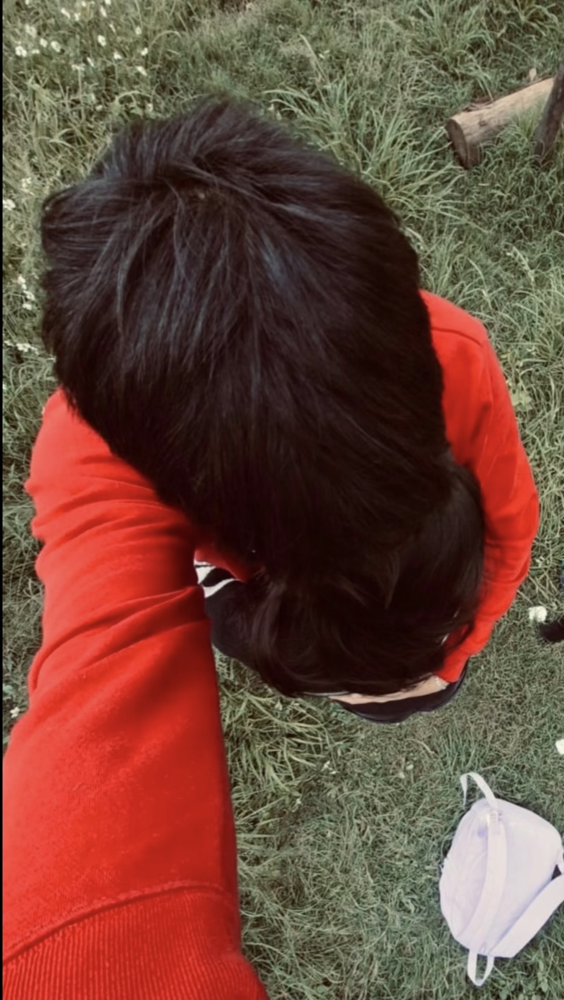

Para ti, siempre
Quería dejarte algo que siempre pudieras encontrar, algo que esté aquí igual que yo: sin prisas, sin exigencias, solo con amor y con este adiós que cuido tanto.
Sé que llevas dentro cosas que a veces pesan mucho, y entiendo perfectamente que te alejaste para no lastimarme. Por eso te digo adiós con el corazón tranquilo, porque sé que lo haces cuidando de ti, y eso es lo que más me importa. Tu bienestar es lo más valioso, y por eso este adiós es con respeto y cariño infinito.
📸 Nuestros recuerdos




💖 Lo bonito que fuimos
Quiero que nunca olvides todo lo hermoso que vivimos fuimos risas que salían solas y momentos que se quedaron guardados en el alma. Cada vez que compartimos tiempo, cada palabra, cada abrazo y cada mirada fueron reales, sinceros y llenos de amor.
Lo que construimos juntos fue único y especial. No importa el tiempo que pase ni que hoy nos digamos adiós; lo bonito que fuimos nadie lo puede borrar, porque quedó grabado en mi corazón y sé que también en el tuyo. Fuimos dos personas que se quisieron bonito, y eso es algo que dura para siempre.
Cuando te sientas mal
Si algún día sientes que todo pesa demasiado, que tus emociones te ganan o que el mundo se siente oscuro, ven y lee esto. Quiero que sepas que no estás sola, aunque nuestros caminos se separen. Entiendo tus días difíciles, entiendo que necesites tu espacio, y te valoro igual o más que el primer día.
No te culpes por sentir, ni por necesitar tiempo. Eres humana y maravillosa tal como eres. Recuerda que aunque no esté físicamente, te llevo siempre en mi pensamiento. Respira profundo, date paciencia y recuerda: fuiste, eres y serás siempre alguien muy especial para mí, y te deseo lo mejor, hoy y siempre.
✨ Muévelo y lee todo lo que te dejo
Te agradezco por todo lo que compartimos, por lo que me enseñaste y por haber sido parte de mi vida. No te pido nada, solo quiero que recuerdes esto siempre:
Aquí estaré siempre en el recuerdo
te deseo paz, te deseo luz y te deseo vida
tan bonita como tú te mereces.
Esta página está llena de corazones, igual que mi recuerdo está siempre lleno de ti. Entra cuando quieras, cuando necesites un abrazo, cuando te sientas triste o simplemente cuando quieras recordar que alguien te quiso de verdad, y te dice adiós con todo su corazón.
— Alguien que nunca dejará de ver lo increíble, valiosa y hermosa que eres